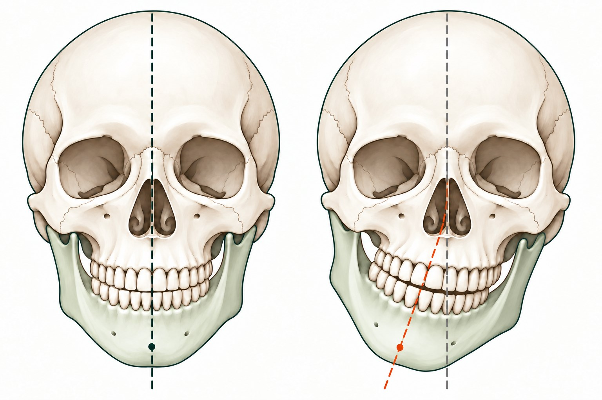

01 · 개요
안면비대칭이란?
안면비대칭(Facial Asymmetry)은 얼굴의 좌우에서 크기, 형태, 높이 또는 위치가 서로 다르게 나타나는 상태입니다. [1]
가벼운 좌우 차이는 흔하며, 비대칭이 있다는 사실만으로 치료가 필요한 것은 아닙니다. [1]
중심선이 일치하는 예
턱이 한쪽으로 치우친 예

리메디 안면비대칭 가이드
얼굴 중심선과 턱의 위치 비교
오른쪽 그림의 회색 점선은 기준선, 주황색 점선은 턱이 기울어진 방향을 보여줍니다.
위치 차이와 기울기를 강조해 단순화한 설명용 개념도입니다. 실제 환자나 치료 전후를 나타내지 않으며, 진단 기준으로 사용할 수 없습니다.
비교 그림 크게 보기 (새 창) →
비대칭은 얼굴의 특정 부위에 국한되어 나타날 수도 있고, 여러 부위에서 동시에 관찰될 수도 있습니다. 예를 들어 눈썹 높이는 다르지만 턱끝은 중앙에 위치할 수 있으며, 턱끝이 한쪽으로 치우치면서 입술과 치아의 중심선도 함께 달라 보일 수 있습니다.
안면비대칭을 평가할 때 살펴보는 부위
- ① 눈과 눈썹의 높이
- 양쪽 눈썹의 높이, 눈꺼풀의 형태, 눈 주변 연부조직의 차이를 살펴봅니다. 눈의 크기가 달라 보인다고 해서 반드시 안와골이나 두개골의 구조적 차이가 원인인 것은 아닙니다.
- ② 코와 중안면의 중심
- 코의 방향, 코 주변의 형태, 양쪽 광대와 볼의 돌출 정도를 확인합니다. 코의 비대칭과 중안면의 골격 차이는 서로 구분해 평가할 필요가 있습니다.
- ③ 입꼬리와 입술의 위치
- 가만히 있을 때와 웃을 때 입꼬리의 높이가 다르게 나타날 수 있습니다. 입술 주변 근육의 움직임, 치아의 맞물림, 턱의 위치 등 여러 요소가 관여할 수 있습니다.
- ④ 턱끝과 하악의 형태
- 턱끝이 한쪽으로 치우쳐 보이거나 한쪽 하악각이 더 발달한 것처럼 보일 수 있습니다. 턱뼈 자체의 형태 차이인지, 아래턱의 위치나 움직임에 따른 차이인지 구분해야 합니다.
- ⑤ 치아 중심선과 교합
- 위아래 앞니의 중심선이 일치하지 않거나, 씹을 때 아래턱이 한쪽으로 이동하는 양상이 나타날 수 있습니다. 치아의 배열과 교합, 턱의 움직임을 함께 확인하는 것이 중요합니다.
안면비대칭은 한 가지 원인으로만 설명하기 어려운 경우가 많습니다. 외형에서 관찰되는 차이와 실제 기능적 문제를 구분해 살펴보는 것이 평가의 출발점입니다. [1] [2]
외형의 차이와 기능의 불편을 함께 살펴야 합니다. 이 페이지는 일반 건강정보이며, 개인의 원인과 치료 필요성은 진찰을 통해 확인합니다.
02 · 원인
안면비대칭의 주요 원인
안면비대칭은 골격의 발달, 치아와 교합, 턱관절과 저작근, 연부조직 등 다양한 요인과 관련될 수 있습니다.
1) 선천적·성장 과정의 골격 비대칭
얼굴뼈는 성장 과정에서 발달하며, 좌우의 성장 정도가 완전히 같지 않을 수 있습니다.
상악과 하악의 크기 또는 위치 차이, 턱끝의 편위, 좌우 하악각의 형태 차이 등은 얼굴 윤곽의 비대칭으로 이어질 수 있습니다.
이러한 경우에는 얼굴의 표면만 관찰하기보다 턱뼈의 형태와 위치, 치아의 맞물림 등을 구분해 평가해야 합니다. 골격성 비대칭이 의심된다면 치과 교정과 또는 구강악안면외과의 평가가 필요할 수 있습니다. [1] [2]
2) 치아 배열과 교합의 차이
치아의 배열이나 위아래 치아가 맞물리는 방식은 아래턱의 위치와 움직임에 영향을 줄 수 있습니다.
예를 들어 좌우 교합이 다르거나 치아가 맞물릴 때 아래턱이 한쪽으로 이동하는 경우, 입을 다물거나 씹을 때 얼굴의 중심이 달라 보일 수 있습니다.
다만 치아 중심선이 어긋나 있다는 사실만으로 턱뼈 자체의 비대칭을 확정할 수는 없습니다. 치아 배열과 턱의 구조적 위치를 구분해 살펴봐야 합니다. [1] [2]
3) 턱관절과 저작근의 기능적 차이
턱관절은 아래턱의 움직임을 담당하며, 주변 저작근은 씹기와 입 벌리기 등의 기능에 관여합니다.
턱관절의 통증이나 움직임 제한, 입을 벌릴 때의 편위, 저작근의 긴장 차이 등이 동반된다면 얼굴의 움직임이나 턱 주변의 불편을 함께 평가할 수 있습니다.
그러나 턱관절장애가 있다고 해서 반드시 안면비대칭이 발생하는 것은 아니며, 턱관절의 증상만으로 얼굴뼈의 구조적 변화를 판단할 수도 없습니다. [3]
4) 연부조직과 근육의 차이
얼굴의 윤곽은 뼈뿐 아니라 피부, 피하지방, 근육 등 연부조직의 영향을 받습니다.
양쪽 볼의 볼륨 차이, 저작근의 발달 정도, 피부와 피하조직의 차이 등에 따라 얼굴의 좌우가 다르게 보일 수 있습니다.
이러한 경우에는 골격 자체의 차이와 연부조직에서 비롯된 외형적 차이를 구분하는 것이 중요합니다. [2]
5) 외상과 후천적인 변화
얼굴이나 턱을 다친 이력, 치과 치료 이후의 변화, 턱관절 부위의 질환 등도 평가 과정에서 확인할 수 있는 항목입니다.
특히 이전에는 뚜렷하지 않았던 비대칭이 점차 심해지거나 한쪽 얼굴의 크기와 형태가 새롭게 달라졌다면, 단순한 미용상의 문제로만 생각하지 말고 원인을 확인해야 합니다. [1] [2]
6) 자세와 생활습관
한쪽으로만 씹는 습관, 이를 악무는 습관, 수면 자세, 목과 어깨의 긴장 등은 턱과 주변 근육의 부담을 평가할 때 참고할 수 있습니다.
다만 특정한 자세나 생활습관만으로 얼굴뼈가 틀어졌다고 단정하기는 어렵습니다. 생활습관의 관리와 실제 골격 비대칭의 원인 평가는 구분해서 접근해야 합니다. [1] [3]
03 · 유형과 자가 체크
얼굴의 차이와 함께 느끼는 불편을 살펴보세요
안면비대칭이 나타나는 양상
안면비대칭은 어느 부위에서 차이가 나타나는지, 얼굴의 정적인 형태와 움직임 중 어느 상황에서 두드러지는지에 따라 여러 양상으로 구분해 살펴볼 수 있습니다.
아래 분류는 이해를 돕기 위한 설명이며, 모든 환자를 하나의 유형에 정확히 대응시키는 표준 진단 체계는 아닙니다.
유형 A. 턱끝 편위형
아래턱의 중심이나 턱끝이 얼굴의 중심선에서 한쪽으로 치우쳐 보이는 양상입니다.
- 턱끝이 좌우 한쪽으로 이동해 보임
- 아래턱의 좌우 윤곽이 다르게 보임
- 위아래 치아의 중심선이 서로 어긋나 보일 수 있음
- 씹거나 입을 벌릴 때 아래턱의 움직임 차이가 관찰될 수 있음
이러한 양상에서는 하악골의 형태와 위치, 치아의 교합, 턱관절의 움직임을 구분해 확인해야 합니다.
유형 B. 입꼬리·미소 비대칭형
가만히 있을 때는 차이가 크지 않지만 웃거나 말할 때 한쪽 입꼬리가 더 높게 올라가거나 입술의 움직임이 다르게 나타나는 양상입니다.
- 한쪽 입꼬리가 더 올라가 보임
- 웃을 때 입술의 중심이 한쪽으로 이동함
- 사진을 찍을 때 미소가 한쪽으로 기울어 보임
- 입술 주변의 움직임과 치아 노출 정도가 좌우에서 다르게 나타남
이러한 차이는 안면근육의 움직임, 치아와 교합, 턱의 위치 등 여러 요인과 관련될 수 있습니다. 입꼬리의 높이만으로 원인을 판단하지 않습니다.
유형 C. 광대·중안면 비대칭형
양쪽 광대의 돌출 정도나 볼의 볼륨, 코 주변의 형태가 다르게 나타나는 양상입니다.
- 한쪽 광대가 더 도드라져 보임
- 양쪽 볼의 볼륨이나 윤곽이 다르게 보임
- 얼굴 중앙부의 좌우 폭이 달라 보임
- 정면 사진에서 얼굴의 중심이 한쪽으로 치우쳐 보임
골격의 형태 차이와 연부조직의 차이는 외관상 비슷하게 나타날 수 있으므로 구분이 필요합니다.
유형 D. 눈썹·눈 주변 비대칭형
눈썹의 높이나 눈꺼풀의 형태, 눈 주변의 연부조직 차이로 인해 양쪽 눈의 크기나 높이가 다르게 보이는 양상입니다.
눈의 크기 차이가 반드시 두개골의 비대칭을 의미하는 것은 아닙니다. 눈꺼풀의 변화나 안과적 원인 등도 고려해야 합니다.
유형 E. 복합형 안면비대칭
턱끝의 편위, 입꼬리의 높이 차이, 광대의 돌출 정도 등 여러 부위에서 비대칭이 동시에 관찰되는 양상입니다.
이때는 한 부위의 외형만으로 전체 얼굴의 원인을 설명하기 어렵습니다. 골격과 교합, 턱의 움직임, 연부조직을 각각 구분해 살펴보는 것이 중요합니다.
안면비대칭 자가 체크리스트
거울이나 사진에서 얼굴의 좌우 차이가 신경 쓰인다면 다음 항목을 참고해 보세요.
본인이 느끼는 변화를 정리하는 참고용 목록입니다. 체크한 개수로 원인이나 심한 정도를 진단하지 않습니다.
여러 항목에 해당하더라도 안면비대칭의 원인이나 심한 정도를 자가 체크만으로 확정할 수는 없습니다. 체크리스트는 본인이 느끼는 변화를 정리하기 위한 참고 자료입니다.
특히 목·어깨 통증이나 두통은 다양한 원인으로 발생하므로, 이러한 증상이 있다는 이유만으로 안면비대칭과 직접적인 인과관계가 있다고 판단해서는 안 됩니다.
얼굴의 변화가 갑자기 발생했거나 점차 진행된다면 진료를 통해 원인을 확인하는 것이 좋습니다.
04 · 진단과 치료 방향
안면비대칭 진료에서는 무엇을 확인할까요?
안면비대칭을 평가할 때는 외형의 좌우 차이만 확인하는 것이 아니라 변화가 나타난 시점, 턱의 기능, 치아의 맞물림, 동반 증상 등을 함께 고려합니다.
아래는 일반적인 평가 항목입니다. 리메디에서 상담하는 범위는 진료 안내에서 확인하세요.
1단계. 발생 시점과 변화 양상 확인
언제부터 얼굴의 좌우 차이가 신경 쓰였는지, 어릴 때부터 있었는지 또는 최근에 새롭게 나타났는지 확인합니다.
외상, 치과 치료, 턱관절 증상 등의 이력이 있는지도 살펴봅니다. 이전 사진이 있다면 얼굴의 변화 양상을 이해하는 데 참고할 수 있습니다. [1] [3]
2단계. 얼굴의 좌우 형태 관찰
눈썹과 눈 주변, 코, 광대, 입꼬리, 턱끝과 턱선 등 주요 부위의 좌우 차이를 관찰합니다. [1] [2]
필요한 경우 얼굴의 정적인 형태뿐 아니라 웃거나 입을 벌릴 때 나타나는 움직임의 차이도 확인할 수 있습니다.
사진은 관찰 자료로 활용할 수 있지만, 촬영 각도와 표정, 렌즈 왜곡 등에 따라 차이가 달라 보일 수 있으므로 사진만으로 원인을 확정하지 않습니다.
3단계. 턱의 움직임과 저작 기능 확인
입을 벌리고 다무는 움직임, 턱의 편위, 씹을 때의 불편, 턱관절 주변의 통증 등을 확인합니다.
필요한 경우 저작근의 긴장과 압통, 목과 어깨의 불편도 함께 살펴볼 수 있습니다. 다만 이러한 소견만으로 골격의 구조적 비대칭을 진단할 수는 없습니다. [3]
4단계. 교합과 구조적 문제의 감별
치아 중심선과 교합의 차이, 턱뼈의 형태 및 위치에 대한 추가 평가가 필요한지 판단합니다.
골격성 비대칭이나 치열·교합의 문제가 의심되면 치과 교정과 또는 구강악안면외과의 평가가 필요할 수 있습니다. 영상검사는 모든 환자에게 일률적으로 시행하는 것이 아니라 임상적 필요성에 따라 결정합니다. [2] [3]
5단계. 개인별 진료 목표 설정
얼굴의 형태에 대한 고민인지, 턱의 움직임이나 통증과 같은 기능적 불편인지 구분하고 현재 상태에서 평가할 수 있는 범위를 설명합니다.
외형적인 개선을 기대하는 경우에도 어떤 부분을 목표로 삼을 수 있는지, 기대하기 어려운 변화는 무엇인지, 추가적인 평가가 필요한지 충분히 확인하는 과정이 중요합니다.
안면비대칭 치료, 무엇이 다를까요?
안면비대칭 치료는 원인과 목표에 따라 달라집니다. 얼굴의 형태를 개선하는 것과 턱관절의 통증 및 기능을 관리하는 것은 서로 다른 치료 목표입니다.
차이가 가볍고 불편이 없다면
모양이나 기능에 큰 불편이 없다면 특별한 치료가 필요하지 않을 수 있습니다. 치료 여부는 원인과 본인이 느끼는 불편을 고려해 결정합니다. [1]
턱관절과 저작근의 기능적 불편이 있는 경우
턱관절 주변의 통증이나 입 벌리기 불편, 저작근의 긴장 등이 있다면 해당 증상의 원인을 평가하고 보존적인 관리 방법을 검토할 수 있습니다.
생활습관 조절이나 적절한 운동·물리적 관리 등은 증상에 따라 고려할 수 있지만, 이러한 관리가 골격성 안면비대칭을 교정한다는 의미는 아닙니다. [3]
골격과 교합의 차이가 의심되는 경우
턱뼈의 크기와 위치 차이, 치아의 맞물림 문제 등이 의심된다면 치과 교정과 또는 구강악안면외과에서 구조적 평가를 받아야 할 수 있습니다.
치료 방향은 비대칭의 원인과 정도, 성장 상태, 기능적 문제 등을 고려해 결정합니다. 모든 비대칭에 교정치료나 수술이 필요한 것은 아닙니다. [2]
연부조직과 외형적 차이가 고민되는 경우
얼굴의 볼륨이나 근육의 형태, 연부조직의 좌우 차이가 주된 고민이라면 해당 부위의 특성과 원인을 먼저 살펴봐야 합니다.
치료 방법에 따라 기대할 수 있는 변화의 범위가 다르며, 연부조직의 차이를 관리하는 방법이 골격의 형태를 바꾸는 치료와 동일한 것은 아닙니다. [2]
두개골 교정과 구강 내 장치에 관하여
두개골 보조기나 교정 장치는 적용 대상과 목적에 따라 구분해야 합니다.
영유아의 자세성 사두증·단두증 등에 사용하는 두개골 보조기는 특정한 두개골 변형을 관리하기 위한 장치입니다. 이를 성인의 얼굴 축소, 중안부 축소 또는 안면비대칭 교정 효과가 입증된 방법으로 일반화할 수는 없습니다. [5]
구강 내 장치 역시 장치의 종류와 적응증에 따라 목적이 다릅니다. 치열과 교합, 턱관절 증상 또는 구강 구조의 문제를 평가한 뒤 적절한 의료진이 적용 여부를 판단해야 합니다. [3]
따라서 특정 장치가 얼굴의 좌우 차이를 모두 교정하거나 얼굴뼈의 위치를 확실하게 바꾼다고 단정하기보다, 어떤 구조에 어떤 목적으로 사용하는지 확인하는 것이 중요합니다.
05 · 자주 묻는 질문
안면비대칭에 관한 자주 묻는 질문
안면비대칭은 얼굴뼈의 성장과 형태, 치아 배열과 교합, 턱관절과 저작근, 연부조직 등 다양한 요인과 관련될 수 있습니다. 외형만으로 원인을 단정하기는 어렵기 때문에 발생 시점과 동반 증상 등을 함께 확인해야 합니다. [1] [2]
눈썹과 눈의 높이, 코의 방향, 광대와 턱선의 형태, 입꼬리의 높이, 턱의 움직임 등을 관찰할 수 있습니다. 다만 거울이나 사진은 촬영 조건에 따라 차이가 달라 보일 수 있으며, 자가 체크만으로 원인이나 치료 필요성을 확정할 수는 없습니다. [1]
서로 다른 개념입니다. 안면비대칭은 얼굴 좌우의 형태나 위치가 다른 상태를 의미하고, 턱관절장애는 턱관절과 씹는 근육 등에 통증이나 기능장애가 나타나는 여러 상태를 의미합니다. 두 문제가 함께 나타날 수는 있지만 반드시 동반되는 것은 아닙니다. [2] [3]
한쪽으로 씹는 습관은 턱과 저작근의 부담을 평가할 때 참고할 수 있는 요소입니다. 그러나 한쪽으로 씹는 습관만으로 얼굴뼈가 비대칭적으로 발달했다고 단정할 수는 없습니다. 기존의 교합 차이, 통증, 치아 문제 등 다른 원인도 확인해야 합니다.
습관을 바꾸는 것만으로 골격의 비대칭이 교정된다고 단정할 수도 없습니다. 턱에 부담을 주는 습관의 관리와 구조적 원인의 평가는 구분해서 생각해야 합니다. [1] [3]
두통과 목·어깨 통증은 근골격계 문제, 신경학적 문제 등 여러 원인으로 나타날 수 있습니다. 턱관절과 저작근의 불편이 함께 있는 경우 관련 증상을 평가할 수 있지만, 두통이나 어깨 통증이 있다는 사실만으로 안면비대칭이 원인이라고 판단해서는 안 됩니다. [3] [6]
가벼운 비대칭은 흔합니다. 모양이나 기능에 큰 불편이 없다면 치료가 필요하지 않을 수 있습니다. 변화가 신경 쓰이거나 기능상 불편이 있다면 원인을 상담하세요. [1]
통증 없는 턱관절 소리는 흔하며 그 자체로 치료가 필요한 것은 아닙니다. 통증, 움직임 제한, 잠김이 동반되는지 확인하는 것이 좋습니다. [3]
치료 결과는 비대칭의 원인과 정도, 치료 방법에 따라 달라집니다. 치료 후에도 일부 좌우 차이가 남을 수 있으며, 기능적 불편을 관리하는 것과 골격의 형태를 변화시키는 것은 서로 다른 목표입니다. 치료 전 기대할 수 있는 변화와 한계를 확인하는 것이 중요합니다. [1]
갑자기 한쪽 얼굴이 처지거나 웃기 어렵거나, 말이 어눌해지거나 한쪽 팔·다리에 힘이 빠지는 증상이 나타나면 뇌졸중 등 응급질환의 가능성이 있습니다. 증상이 잠시 후 사라지더라도 즉시 119에 연락해 응급 평가를 받아야 합니다. [4]
06 · 리메디 진료 안내
마포 경희 리메디한의원 안면비대칭 상담 안내
얼굴의 좌우 차이가 고민될 때는 단순히 어느 쪽이 더 크거나 높은지를 확인하는 것만으로 충분하지 않을 수 있습니다.
경희리메디한의원에서는 안면비대칭에 대한 상담 시 환자가 가장 신경 쓰는 부위와 불편을 먼저 확인하고, 얼굴의 좌우 형태와 턱의 움직임, 저작근의 긴장, 목과 어깨의 불편 및 생활습관 등을 함께 살펴봅니다.
다만 관찰되는 모든 차이가 근육이나 자세에서 비롯되는 것은 아닙니다. 골격과 교합의 문제, 턱관절 질환 또는 다른 의학적 원인이 의심되는 경우에는 해당 분야의 평가가 필요할 수 있습니다.
상담 전 준비하면 좋은 내용
- 얼굴의 좌우 차이를 처음 인지한 시점
- 특히 신경 쓰이는 부위: 눈, 광대, 입꼬리, 턱끝, 턱선 등
- 입을 벌리거나 씹을 때 느끼는 불편
- 턱관절 통증이나 소리, 입 벌리기 제한 여부
- 얼굴이나 턱의 외상 및 치과 치료 이력
- 기존에 촬영한 검사 영상이나 관련 진료 자료
상담에서 확인해 주세요
- 현재 상태에 대한 평가와 고려할 수 있는 진료 방향
- 치료의 목적과 기대할 수 있는 변화 및 한계
- 추가 검사나 다른 진료과 평가의 필요성
상담에서는 현재 상태에 대한 평가, 고려할 수 있는 진료 방향, 치료의 목적과 한계, 추가적인 검사가 필요한지 등을 확인하는 것이 좋습니다.
경희리메디한의원은 환자 개개인의 고민과 상태를 바탕으로 필요한 평가와 진료 방향을 안내합니다.
골격·교합 문제나 갑작스러운 신경 증상은 해당 분야의 평가가 필요할 수 있습니다. 구체적인 치료 방법과 기간·비용은 진찰 후 안내받으세요.
경희 리메디한의원
서울특별시 마포구 월드컵로1길 14
마포한강푸르지오 1차아파트 1층